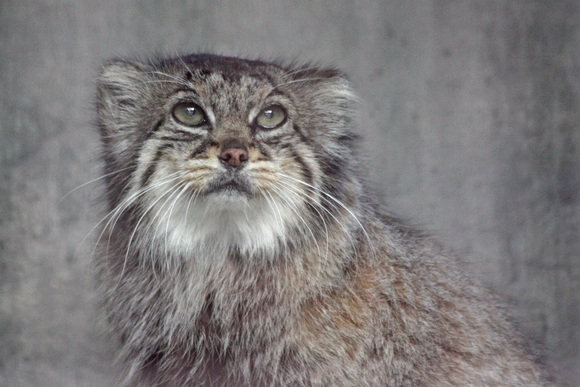

Tabby
Tabby Mother Of bol ,Honey ,Hal , Shal, and Sural. Is currently the oldest known manul at 15(as of may 6th 2023) years old.

Tabby Our queen
Tabby being the oldest manul is currently the queen manul, she also goes by grandmanul (grandma manul) she does not have a cage mate so lives in her cage alone. she prefers this as her days of caring for minuls is over and now time for her to relax.